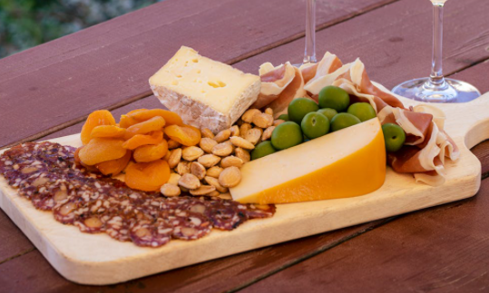
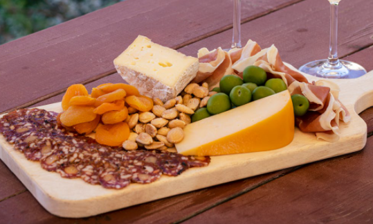

With so much to pick from how do you even start pairing items??
The beginning step is the easiest, pick two products you like! This goes for cheese, beer, charcuterie, and wine. Identify what you like first and what is one product that is essential to you and then we can go from there.
All right - here's where things can get a bit more tricky. If you decided you wanted some dry salami such as Sopressata or Finocchiona our suggestion is to pick a creamy cheese with that. Often times some spreadable goat cheese will go great with this! If you want to take it up a notch pick a sweeter one such as a blueberry or fig goat cheese.
Next we should decide something to contrast with the previous pairing. Now that we have a dry salami, we recommend doing something with a higher moisture contet. Try out some cubed mortadella or cooked capicolla for a nice change up. If you want to do another salami however, something spicy or smokey would be great choices!
Finally we recommend having some Prosciutto or Speck. Speck is a smoked prosciutto and both of these items are sure to "wow!" your guests. These meats go particularly well with hard Italian style cheeses. Sartori cheeses like the Belavitano line are delicious matches! You could also change it up and wrap the charcuterie around melon or pineapple for a delectable sweet and savory treat!